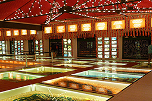
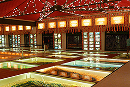
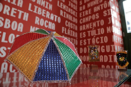
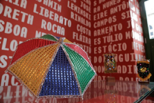

Parque de Esculturas de Francisco Brennand
O Parque de Esculturas de Francisco Brennand é um dos lugares turísticos em Recife que também chama atenção: um conjunto de obras do artista plástico pernambucano Francisco Brennand, instalado em um recife artificial na orla do Marco Zero. O parque tem como destaque a Coluna de Cristal, uma escultura de 32 metros de altura que simboliza o marco dos 500 anos do descobrimento do Brasil. O parque pode ser acessado por meio de um passeio de catamarã pelo rio Capibaribe ou de carro, pelo bairro de Brasília Teimosa.
Paço do Frevo
O Paço do Frevo é um museu dedicado ao ritmo musical e dança que surgiu em Pernambuco há mais de 100 anos. A construção é mais recente e fica localizada no bairro do Recife, também conhecido como Recife Antigo. O museu ocupa um prédio histórico e conta com exposições interativas, oficinas, shows e um acervo de mais de 12 mil itens relacionados ao frevo É uma opção de onde passear em Recife e uma oportunidade para conhecer mais sobre essa expressão cultural pernambucana que é Patrimônio Imaterial da Humanidade.
 

 
